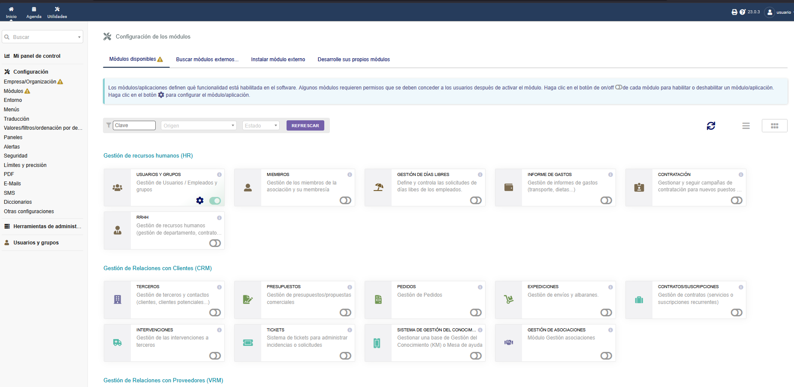
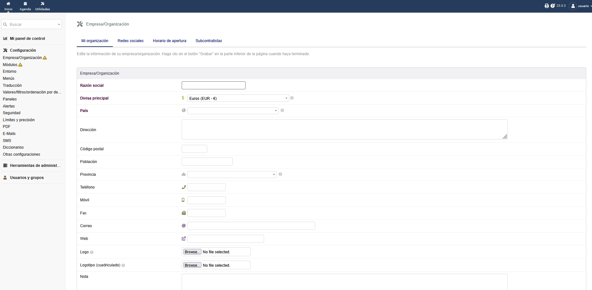
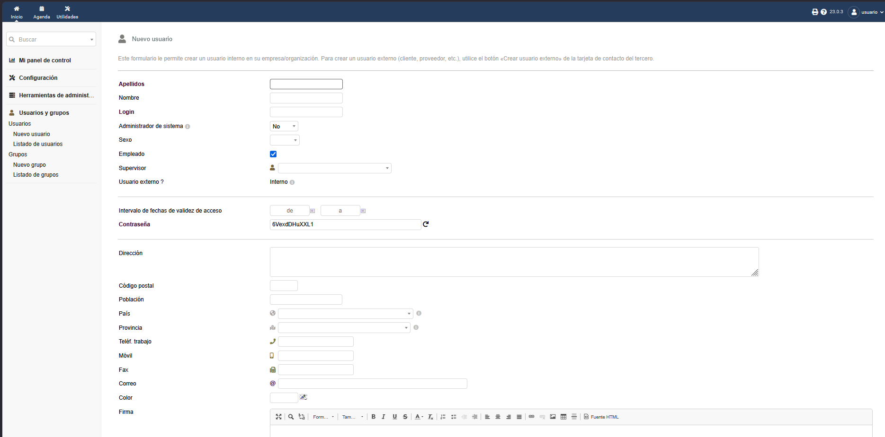
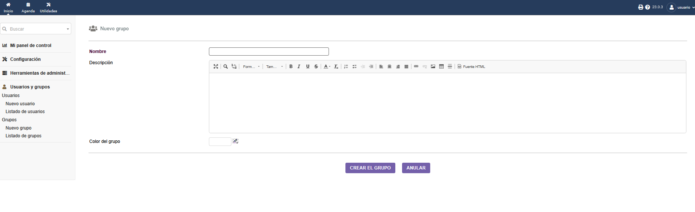

Administración y configuración
Una vez instalado Dolibarr hay que configurarlo. La administración se hace desde el menú Inicio → Configuración.
Activar módulos
Dolibarr funciona con módulos. En Configuración → Módulos se pueden activar o desactivar según las necesidades de la empresa. Para una pyme habitual se activan al menos:
- Terceros (clientes y proveedores).
- Productos y servicios.
- Presupuestos y pedidos.
- Facturas a clientes.
- Stock y almacén.
- Bancos y cajas.

Captura 6: Pantalla de gestión de módulos
Datos de la empresa
En Configuración → Empresa se introducen los datos que aparecerán en las facturas:
- Nombre y razón social.
- NIF/CIF.
- Dirección.
- Moneda (EUR).
- Logotipo.

Captura 7: Formulario de datos de la empresa
Acceso seguro a la información
Dolibarr utiliza un sistema basado en usuarios, grupos y permisos. La idea es que cada persona solo pueda acceder a la información que necesita para su trabajo.
Crear usuarios
Desde Usuarios y grupos → Nuevo usuario se crea cada cuenta. Los datos importantes son:
| Campo | Descripción |
|---|---|
| Login | Identificador para iniciar sesión. |
| Contraseña | Mínimo 8 caracteres con números y símbolos. |
| Administrador | Da permisos totales. Activar solo para administradores reales. |
| Fecha de validez | Caducidad de la cuenta (útil para becarios o externos). |

Captura 8: Formulario de creación de usuario
Grupos y permisos
Los grupos permiten asignar los mismos permisos a varias personas. Por ejemplo, todos los comerciales pertenecen al grupo "Ventas" y comparten los mismos privilegios.
Los permisos son granulares: para cada módulo se puede dar acceso a leer, crear, modificar, borrar o exportar.
Roles habituales
Administrador
Acceso total. Gestiona usuarios, módulos y configuración.
Contable
Acceso a facturación, bancos y contabilidad. Sin acceso a la configuración.
Comercial
Gestiona clientes, presupuestos y pedidos. Solo lee productos y stock.
Almacén
Gestiona stock, recepciones y expediciones. No ve precios de venta.
Empleado
Solo accede a su propia agenda y sus documentos.
Auditor
Solo lectura y exportación. Cuenta temporal con caducidad.

Captura 9: Asignación de permisos a un grupo
Buenas prácticas de seguridad
- Borrar la carpeta
install/tras la instalación. - Usar contraseñas largas y con símbolos.
- No usar el usuario
adminen el día a día. - Hacer copias de seguridad regulares de la base de datos.
- Mantener Dolibarr actualizado.
- Usar HTTPS si se publica en Internet.
Importante: La seguridad no se "activa" una sola vez. Es necesario revisar usuarios, contraseñas y actualizaciones de forma periódica.